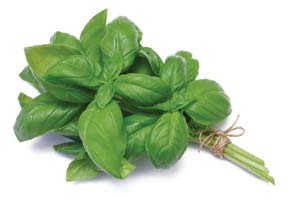
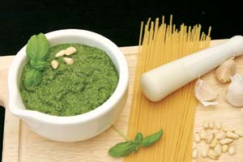

Every once in a great while I ask myself, “If I could only grow one vegetable, what would it be?” I usually settle on the classic answer of tomatoes. I can’t imagine a summer without ‘Sungold’ cherry tomatoes, ‘Orange Banana’ or ‘Speckled Roman’ paste tomatoes. Then my mind asks - “What about basil?” - and I know that I wouldn’t be happy without fresh basil on my tomatoes or, even better, fresh basil pesto on pasta topped with garden-ripened tomatoes. And fresh parsley. And homegrown garlic!
The ultimate vehicle for the pure heady essence of fresh basil is pesto, an herb paste that is Genoese in origin. Add pine nuts, garlic, olive oil and grated cheese and nothing else. Traditionally it is made with a mortar and pestle. The word pesto originates from “pestare,” meaning to grind or pound.
I have noticed the difference in flavor between ground, minced, food-processed and blender-made pesto. The latter is almost metallic in taste, whereas chopped or ground pesto brings out the purest basil flavor. But I like pesto made in a more practical food processor well enough to use that as my tool of choice for large preparations.
Pesto has been taking on many other flavors as well, some traditional and some evolving out of its popularity. Flavorful herb pestos can be made from cilantro, parsley, arugula, spinach and more. Here are my favorite pesto recipes.
Basil Pesto
2 cups tightly packed fresh basil leaves, large stems removed
1/2 cup extra virgin olive oil
3 tbsp pine nuts (walnuts are a less expensive substitute)
2 cloves garlic, coarsely chopped
Salt to taste
1/2 cup freshly grated Parmesan cheese
2 tbsp freshly grated Romano cheese
3 tbsp butter, softened to room temperature (optional)
Wash the basil and pat dry. Place the basil, olive oil, pine nuts, chopped garlic and salt in the food processor bowl and process to a uniform creamy consistency. Place mixture in a bowl and add in the grated cheeses, stirring by hand. Once well blended, add the butter (if using) and mix thoroughly.
This is enough pesto to flavor 1½ pounds of pasta. When spooning the pesto over pasta, dilute it slightly with a tablespoon of water leftover from the pasta-cooking water. Pesto will keep in the refrigerator for at least 2 weeks. To freeze pesto, make the sauce up to the cheese step, but don’t add the cheese. Freeze pesto in small labeled containers. Add the cheese when you thaw the pesto and mix it with the cooked pasta. Sometimes I do freeze pesto with the cheese in it for convenience. But adding the cheese later has the best flavor and texture.
Parsley pesto can be made by substituting half or all the basil in the recipe above. Try adding 2 to 4 scallions as well. Serves 5.
Spinach or Arugula Pesto
11/2 cups spinach or arugula
1/2cup extra virgin olive oil
1 to 2 cloves garlic
1/2cup pitted calamata olives
2 tsp pine nuts, cashews or walnuts
4 tbsp grated Parmesan cheese
Wash and towel dry the spinach or arugula. Place all ingredients in a food processor and blend to a smooth consistency. Serves 5.
|
 ISTOCKPHOTO Basil is the main ingredient in traditional pesto. |
 ISTOCKPHOTO Use pesto with pasta for a snappy summer meal. |
|